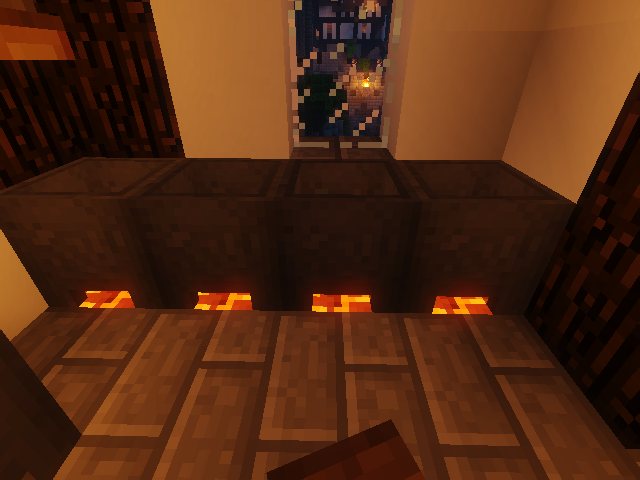
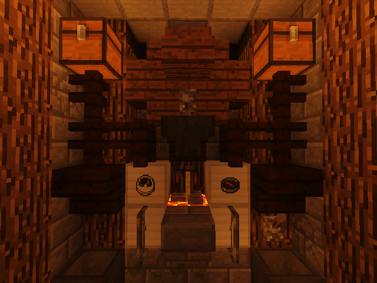
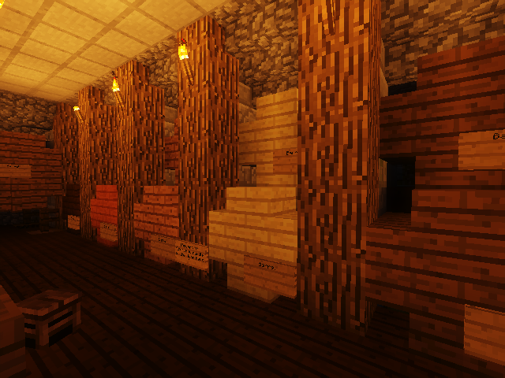
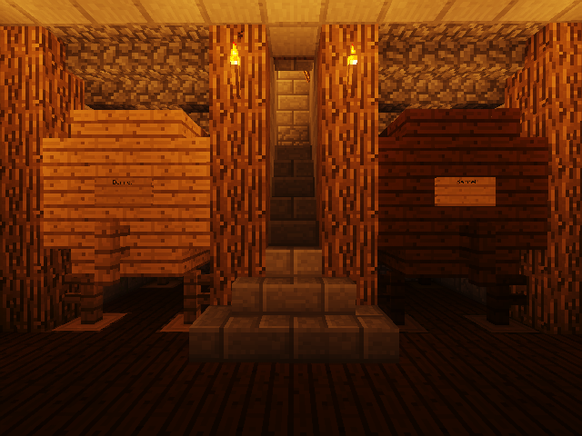
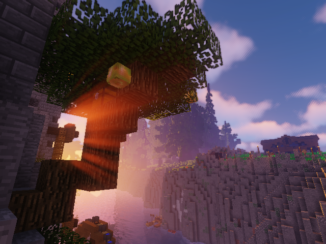
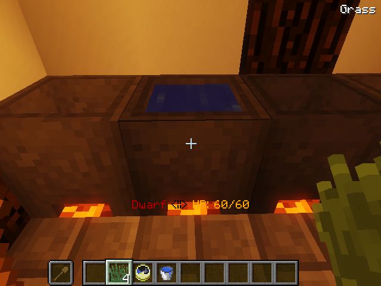
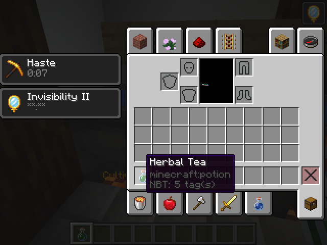
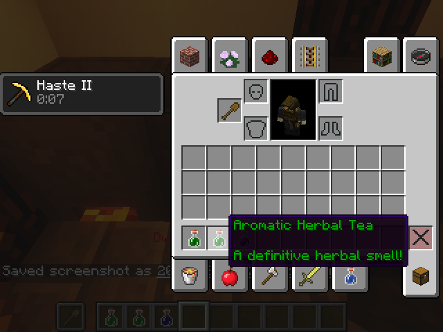
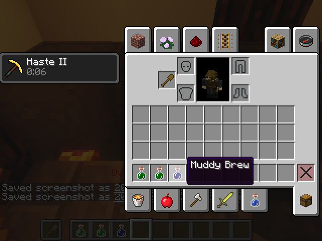
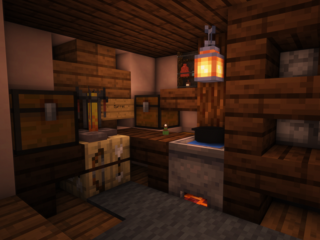

Brewery is one of many plugins used to enhance the roleplay experience of the server. Through its usage, it is possible for players to create a great number of drinks, tonics, teas and more by combining ingredients in a cauldron. These are not vanilla style potions, and most do not give any beneficial effect, however they are incredibly useful for roleplay purposes and knowledgeable brewers are always in high demand.
To begin brewing you will need a cauldron sitting over a heat source (Lava, magma blocks or fire). Without being heated, your brews will not mix properly. Make sure to fill the cauldron with water! Next, you will need the proper ingredients. While there are many ingredients accepted, most brews use some plant based material.

To put your ingredients in the cauldron you will need to right click while holding the ingredients on the cauldron. Due to an internal bug, it is recommended you hold a shovel or some other tool in your offhand to properly have blocks and plant blocks enter the cauldron. Think of it as your mixing spoon!
Finally, you will need bottles and a clock. Right clicking the cauldron with a clock will tell you how long the cauldron has been brewing. Different brews take time, with harder spirits usually taking more time than weaker drinks.
When you believe it has finished brewing, you may right click the cauldron with your bottles to take your brew out.
While many of our drinks do not require much more work than simply brewing the ingredients together, nearly all of our alcohols do require some additional steps.
The first option is distilling. Normally, this would require just a brewing stand with glowstone placed in the ingredient slot. However, on BWRP larger distilleries are necessary to achieve the same effect.
Brews can be distilled once or multiple times. It is up to the brewer to discover what creates the perfect brew.


Another option is aging. Aging is done in barrels, which are multiblock storages for drinks. Barrels can come in two sizes, large and small and can be made with any wood type.
Different brews can either have a specific barrel to be perfect or can be aged in any barrel.
Brews can be aged, distilled or both. It is up to you to find out which combination creates the best brew!


To demonstrate how to brew we shall go through the steps of making a simple starter brew!
Aromatic Herbal Tea
First of course you will require a heated cauldron.
Next you will need your tools (Spoon, clock, bottles) and your ingredients (grass). Right click with your ingredients to place them in the cauldron. They will disappear from your inventory and make a sound when going in.
You may now right click with your clock to check its time. Brewery will tell you how long it has been cooking in chat.

Because you get three bottles, it is possible to pull the brews out at three different times. It is possible to place more ingredients in after it has been cooking if you feel that is a better way to test.
We will be pulling three different times out, one at 3 minutes, 5 and 8.



These are the three resulting brews. The first two were recognized as some sort of tea, while the third was simply too long and is not close enough to be recognized.
While it's clear that the 2nd brew is perfect, with the colored name, let us place the first in a barrel to find where we went wrong. Note it may take some time to activate. Within the barrel you’ll find that the first one had its time highlighted red, indicating that was the portion that was off from the perfect brew, and by a significant amount. The coloring scale goes from red, to orange, and finally to green when it is close enough or perfect.
Brewers and alchemists have the ability to gather custom ingredients scattered around the world to make special potions. While everyone has the ability to combine and mix these ingredients to get interesting brews, only the Alchemist has the ability to create the ‘perfected’ version of a potion, which are used in some skills and crafting recipes.
All Alchemical ingredients can be brewed in order to taste them and begin mixing them with other brewed ingredients.
We advise some familiarity with BWRP mechanics and Brewery systems as a whole before attempting alchemy.

Brewery is a plugin that requires patience and time! It's ok if you get stuck with one brew you’re chasing, not all are the same difficulty.
If your character is coming into this world having an experience in brewing, but you have never learned any recipes, reach out to an ST and they may grant you some starting brews! Other brewers are also sometimes willing to work with you in sharing knowledge, but know that recipes for how to brew some drinks is some of the most valuable knowledge a brewer, alchemist, or any characer, could possess.